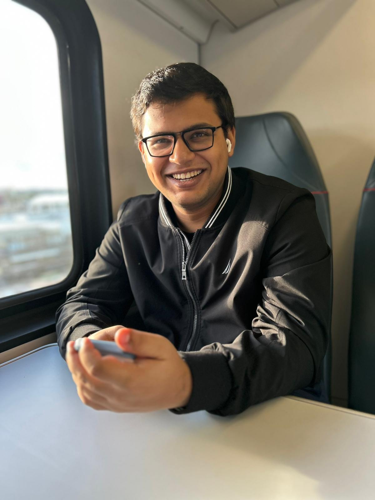
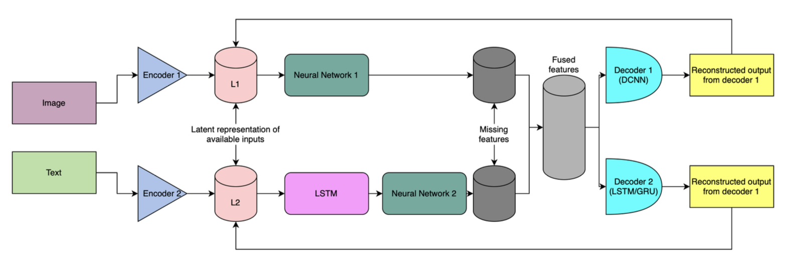
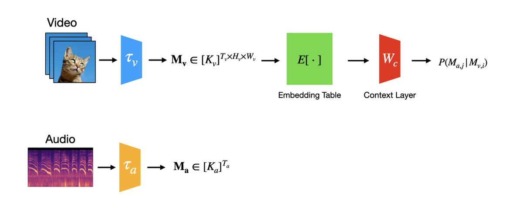

I'm a Masters' student in the Department of Electrical and Computer Engineering at Carnegie Mellon University. I'm working in the CMU Biometrics Center led by Dr. Marios Savvides. My research interest broadly lies in multimodal machine learning and computer vision. I completed my B.Tech in Electronics and Instrumentation Engineering from Vellore Institute of Technology, India, where I worked on several research projects with a focus on biomedical instrumentation and deep learning. Prior to joining CMU, I worked as a Research intern at Nanyang Technological University, Singapore, Indian Institute of Technology, Kharagpur and Indian Institute of Technology, Tirupati
Selected Publications
SOLAR: Scalable Optimization of Large-scale Architecture for Reasoning
Li, C., Luo, Y ., Bolimera, A., Ahmed, U., Srinivasan, S. K., Gokhale, H., & Savvides, M
arxiv 2025 / [pdf]
Secure image data storage and transmission using ESP32-CAM and Raspberry Pi with steganography
H. Gokhale, C. Satapathy, and A. Z. Syed
Springer International Publishing, 2022 / [paper]
Design of novel hand glove based dry-iontophoresis system for treating palmar hyperhidrosis
Best Paper Award
C. Satapathy, H. Gokhale, and R. Nersisson
Innovations in Power and Advanced Computing Technologies (i-PACT), 2021 / [paper]
Galvanic skin response based stress level detection using supervised machine learning approach
Best Paper Award
Chirag Satapathy, Hrishikesh Gokhale, Ali Zoya Syed, Ruban Nersisson
AIP Conference Proceedings 2024 / [paper]
Projects

Latent Completion Networks (LCN) — Robust Missing-Modality VAEs
Developed an “active-inference” VAE that predicts the latent distribution of any absent modality with a small completion MLP, trained end-to-end via pseudo-Gibbs sampling and fused through a Product-of-Experts layer. Masked-ELBO + MC-Dropout design lets the model learn from arbitrarily incomplete samples while providing calibrated epistemic uncertainty for each imputed view. Outperformed mainstream baselines on Fashion-MNIST missing-data tests: SSIM 0.463 (+3.6 % vs. MVAE/MMVAE) with comparable MSE, and remained stable when up to 50 % of modalities were randomly withheld.

Multimodal Skip-Gram Video + Audio Representation Learning
Designed discrete-token skip-gram pipeline that quantizes 16-frame video clips with VQ-GAN and co-occurring audio with BEATS, then learns dual embeddings that align inter-modal and intra-modal context while remaining lightweight and hyper-parameter-lean. Delivered state-of-the-art intrinsic quality: trained visual embeddings achieve a class-separation ratio increase by >50% and cluster-overlap decrease by >30% vs. CLIP on UCF-101, visualised via t-SNE. Strong downstream performance: a frozen DINOv2 encoder plus 4-layer MLP, powered by our tokens, reaches 85.7% top-1 accuracy on UCF-101 with minimal compute, matching larger supervised models.

Locally Connected Layers for Robust Speech and Audio Models
Using untied convolutional kernels (locally connected layers) to implement speech and audio models to increase the biological plausibility of the network. Comparing the robustness against adversarial attacks for locally connected layers to convolutional layers used for speech and audio models.
Teaching Experience
Teaching Assistant for 18-786: Introduction to Deep Learning
Spring 2025, Carnegie Mellon University